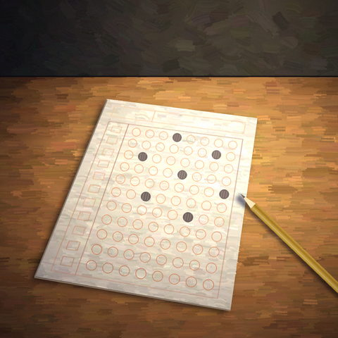
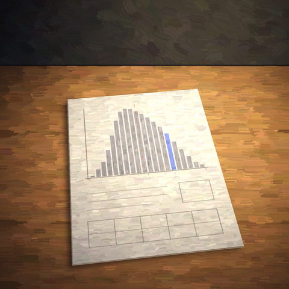

年度と科目を選ぶ
選ぶと、その年の平均点と偏差値の計算、問題・正解のPDFのページに進みます。
国語 数学IA 数学IIBC 英語R 英語L 物理 化学 生物 地学 物基 化基 生基 地基 情報I 地理 日本史 世界史 倫理 政経
国語 数学IA 数学IIBC 英語R 英語L 物理 化学 生物 地学 物基 化基 生基 地基 情報I 地理 日本史 世界史 倫理 政経
国語 数学IA 数学IIB 英語R 英語L 物理 化学 生物 地学 物基 化基 生基 地基 旧課程 地理B 地理A 日本史B 日本史A 世界史B 世界史A 現社 倫理 政経 倫政
国語 数学IA 数学IIB 英語R 英語L 物理 化学 生物 地学 物基 化基 生基 地基 旧課程 地理B 地理A 日本史B 日本史A 世界史B 世界史A 現社 倫理 政経 倫政
国語 数学IA 数学IIB 英語R 英語L 物理 化学 生物 地学 物基 化基 生基 地基 旧課程 地理B 地理A 日本史B 日本史A 世界史B 世界史A 現社 倫理 政経 倫政
国語 数学IA 数学IIB 英語R 英語L 物理 化学 生物 地学 物基 化基 生基 地基 旧課程 地理B 地理A 日本史B 日本史A 世界史B 世界史A 現社 倫理 政経 倫政
できること

点数を入れて、平均と比べる年度×科目のマス目に点数を入れて送ると、サイト内の平均点と全国の平均点、全国偏差値が出ます。本番の目安点と、過去問の進み具合も。点数を入れる → 時間を計って解く本番と同じ制限時間で過去問を解き、設問ごとに○×をつけると、全国の正答率（2023年以降）と並べて見られます。過去問演習へ →
時間を計って解く本番と同じ制限時間で過去問を解き、設問ごとに○×をつけると、全国の正答率（2023年以降）と並べて見られます。過去問演習へ →
 解説動画（順次公開中）数学IA・数学IIB/IIBC・化学・物理・生物を、年度ごとに1本で解説。大問ごとのチャプターつきで、年度は順次増やしています。解説動画の一覧 →
解説動画（順次公開中）数学IA・数学IIB/IIBC・化学・物理・生物を、年度ごとに1本で解説。大問ごとのチャプターつきで、年度は順次増やしています。解説動画の一覧 →

過去問の平均点2021〜2026年の主な科目の平均点と問題・正解のPDF。2023年からは大問ごとの平均点と設問ごとの正答率も。年度・科目別の一覧 →2026年の全問解説